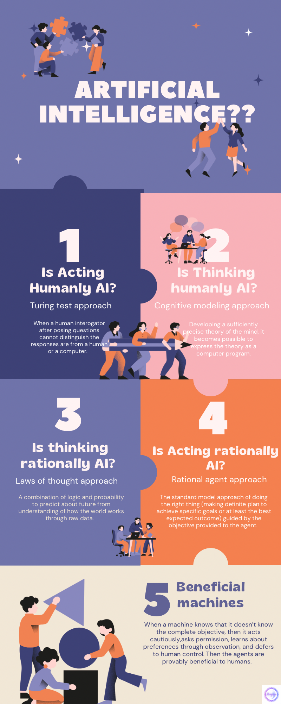

The Journey of "What is Artificial Intelligence?"
When we want to understand AI in a deeper sense we start with trying to define what artificial intelligence is. Lets see the definition that’s popular around:
Artificial Intelligence:
Understanding and building intelligent entities that can compute to act effectively and safely in wide variety of novel situations.Now just referring to intelligence is making it too broad and open to interpretation. But to build something scalable we need to have much more clarity. So let's see what the definition of intelligence entails to.
Intelligence: How brain can perceive, understand, predict and manipulate a complex world.
There are mainly two ideas that work behind systems seen as artificial intelligence:
- Intelligence in terms of fidelity to human performance.
- Rationality, loosely speaking ‘doing the right thing’.
When you try to further bring the theoretical understanding into practicality it comes up with subject matter where AI has again two keen interests.
- Intelligence as a property of internal thought process and reasoning. Now this leads to Human like intelligence:-empirical science related to psychology involving observations and hypothesis about actual human behaviour and thought process.
- Intelligent behaviour as external characteristic. The rationalist approach : combination of mathematics, statistics, engineering, control theory and economics.
These two dimensions lead us to four major areas of research such as:
1. Acting Humanly or the Turing test approach.
Alan Turing designed this experiment to answer the question “Can a machine think”. Essentially the machine passes the test if the answers produced by it cannot be distinguished from the responses of a person by an examiner. The capabilities needed by the computer to achieve this are:- Communicate in Human Language: Natural Language Processing
- Store what it knows or hears: Knowledge representation
- Answer questions and draw conclusions: Automated reasoning
- Adapt to new circumstances and extrapolate patterns: Machine learning.
Earlier they did not think a machine would need to interact with objects and people in real world, but with advancement in technology that has changed. So, a Total Turing test was developed which accommodated this leading to addition of:
- Computer vision and speech recognition
- Robotics to manipulate and move objects
But it is not a benchmark as the focus should be on understanding the principles of intelligence and not mere imitation of humans.
2. Thinking Humanly: Cognitive modelling approach.
We can learn about human thoughts in three ways:- Introspection: analysing our thoughts as they occur in a day.
- Psychological experiments: observing a person in action.
- Brain imaging: observing the brain in action.
3. Thinking Rationally: Laws of thought approach.
Aristotle first tried to codify right thinking or irrefutable reasoning process. He introduced syllogism.
Syllogism: provided pattern for argument structures that yielded correct conclusion when given correct premises.
The study of laws of thought supposed to govern the operation of mind was called logic.
Based on the logicist tradition intelligent system could be built by precise notation for statements about objects in the world and the relations among them.
Logic is based on certainty which is not so ideal in the real world. To accommodate this probability is employed. Probability allows the construction of a comprehensive model of rational thought, leading from raw information to understanding of how the world works to predictions about the future.
4. Acting rationally: rational agent approach.
A rational agent: is the one that acts so as to achieve the best outcome or, when there is uncertainty, the best expected outcome.
Rational approach has two advantages compared to others:
- It is more general than the laws of thought approach as it does not limit to correct inference.
- It is amenable to scientific development and accommodates changes as it is mathematically well defined and completely general.
Standard Model : Its is a generalised AI model built to do the right thing, where right thing is defined by the objective we provide. For example in statistics a decision rule can minimise the loss function.
Even with standard model another thing to keep in mind is Limited Rationality.
Limited Rationality : Acting appropriately when there is not enough time. As standard model always strives for perfect rationality but isn’t always feasible in a complex environment.
Beneficial Machines
Standard model assumes that we will supply a fully specified objective to the machines. But in the real world it is more and more difficult to specify objectives completely. Standard model works best in a controlled simulated environment like playing chess. But in case of a self driving car where objectives cannot be defined clearly the real world implications cannot be defined in detail.
It is impossible to anticipate all the ways a machine can misbehave. Extreme behaviours such trying to hack more computing power by breaching security to achieve an objective is not unintelligent behaviour. They are logical consequences of defining winning as the sole objective.
Provable Beneficial : When a machine knows that it doesn’t know the complete objective, it has an incentive to act cautiously, to ask permission, to learn more about our preferences through observation, and to defer to human control.
For further understanding and detailed studies refer to "Artificial Intelligence by Russel and Norvig" as these are my study notes from the same.